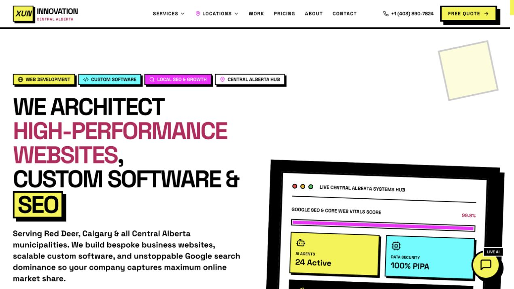

Custom software & SaaS
Web platforms, business applications, and software designed around how a team actually works.
MY COMPANY / CENTRAL ALBERTA
Through my company, Xun Innovation, I build custom software, websites, AI systems, and automation for businesses. Based in Central Alberta, the company connects practical engineering with the day-to-day problems of running and growing a business.
Visit xuninnovation.ca ↗
WHAT WE BUILD
Web platforms, business applications, and software designed around how a team actually works.
Document intelligence, workflow automation, and AI integrations with a practical purpose.
Business websites, local SEO, and digital experiences for organizations in Central Alberta.
My research work starts with understanding a system. The same approach shapes Xun: understand the business, choose tools that fit, and make the experience clear for the people using it.
Explore the company and current services ↗